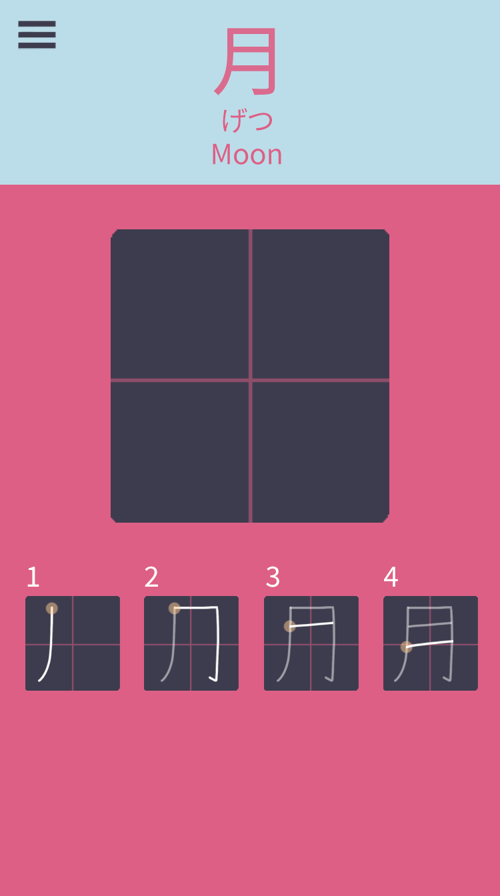
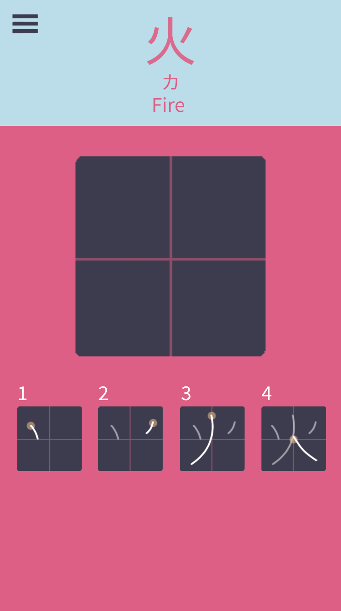
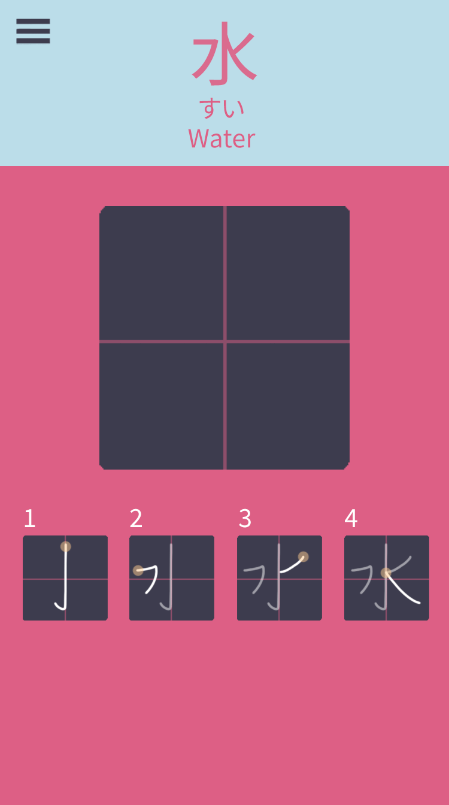
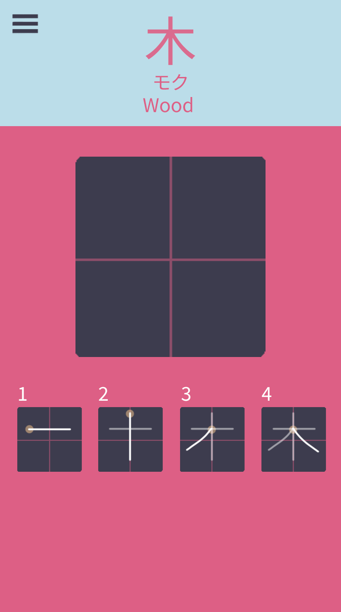
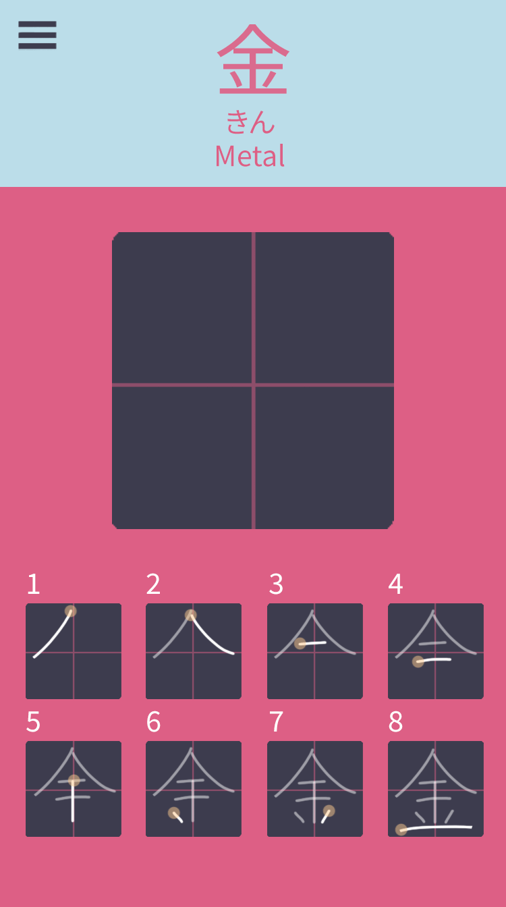
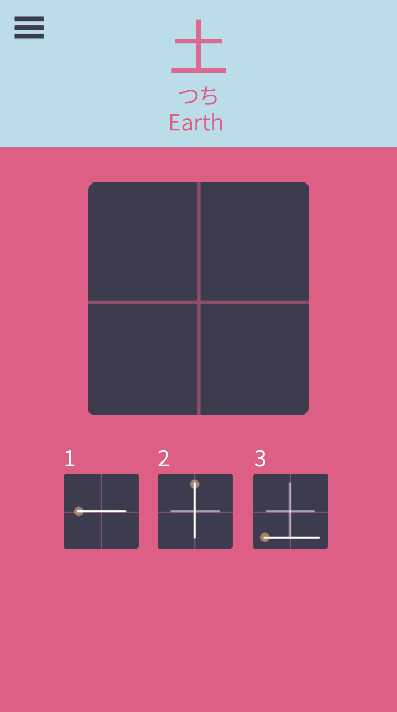
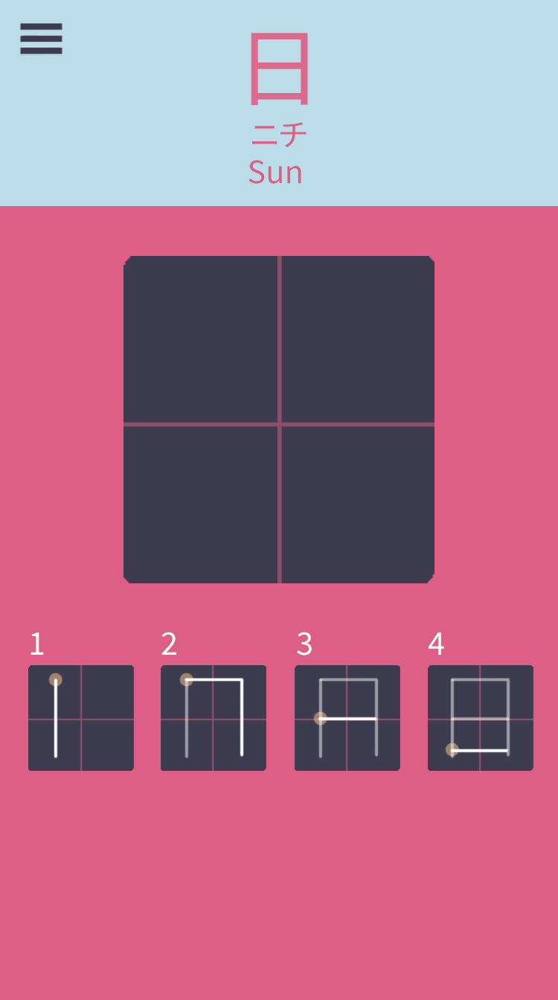

UI Design, illustration

× for: design process × tools: adobe photoshop, invision
A simple prototype to show the process of practicing Japanese every day. Check out the live prototype here!







this description is a work in progress. I made this project to lay out my ideas for an app I'd like to have, in this case, a kanji stroke order diagram. The animations were hand drawn in Photoshop, using just a mouse! For this project, we just fleshed out one section, but I would like to revisit this project and fill in the other sections with their respective kanji.